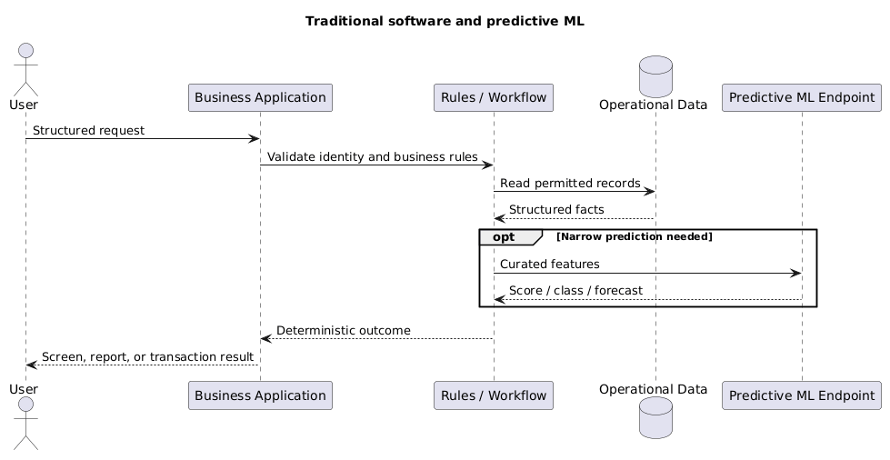
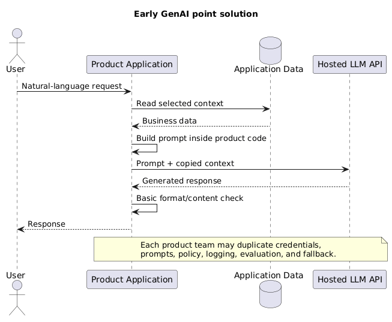
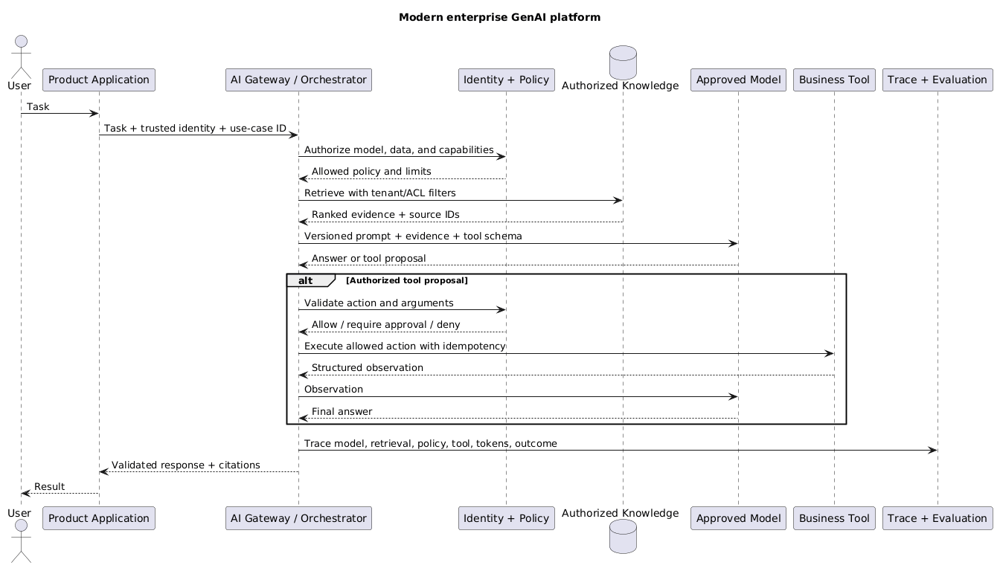

AI Infrastructure and Evaluation
Use this page for the cloud-neutral production envelope around an AI system and the evaluation loop that proves changes are safe. AWS service mappings belong in AWS AI services.
1. Production reference architecture
user → identity → API/application → authorization → AI orchestrator
├─ model gateway
├─ retrieval
├─ tools/workflows
├─ policy/guardrails
└─ state/cache
← validated response + citations + audit trace ←
- Identity proves who or what is calling.
- Authorization decides which model, document, tool, tenant, and operation the caller may use.
- AI orchestrator builds context, routes models, invokes retrieval/tools, applies policy, and records traces.
- Model gateway normalizes model access, quotas, timeouts, routing, fallback, and usage accounting.
- Retrieval layer supplies changing/private evidence and enforces document access.
- Tool/workflow layer performs deterministic operations and side effects.
- Guardrails/validators inspect requests and responses but do not replace identity, authorization, or domain rules.
- Observability/evaluation surrounds every component; it is not a final model-only check.
2. How companies set up GenAI
- These are maturity patterns, not mandatory migration stages.
- A company may use all four patterns at once for workloads with different risk and complexity.
- The important change is not merely replacing an API:
- traditional applications keep intelligence inside code, rules, data, and narrow models;
- early GenAI applications add a language model directly inside each product;
- modern platforms centralize model access, retrieval, policy, evaluation, and observability;
- agentic systems add bounded runtime tool choice where fixed workflows are insufficient.
2.1 Traditional software and predictive ML
- The application owns the business workflow and deterministic decisions.
- Search/databases provide facts; a narrow ML model may predict a score, class, forecast, or recommendation.
- The predictive model normally returns structured output rather than generating the user experience.
- Strengths:
- explicit logic and permissions;
- predictable tests and failure handling;
- strong transaction boundaries.
- Limits:
- natural-language interfaces and unstructured content require substantial custom code;
- every new task needs rules, features, models, or workflow changes.

🏢 Traditional software and predictive ML
2.2 Early GenAI: direct model integration
- A product team calls a hosted LLM directly from its application backend.
- The application builds a prompt from user input and selected business data.
- This is useful for prototypes and one bounded use case.
- It becomes difficult at company scale because teams duplicate:
- provider credentials and SDK integration;
- prompt storage and model configuration;
- safety filters and logging;
- retrieval pipelines;
- cost controls and evaluation;
- fallback and model-upgrade work.
- Common failure: the prototype becomes production without proper authorization, data classification, regression tests, or ownership.

🚀 Early GenAI direct model integration
2.3 Modern enterprise GenAI platform
- Product teams own the user journey, domain workflow, acceptance criteria, and business outcome.
- A shared AI platform provides reusable controls:
- model gateway and provider adapters;
- identity propagation and policy enforcement;
- approved prompt/model configuration;
- retrieval and knowledge-source connectors;
- tool registry and execution boundaries;
- guardrails, tracing, token/cost accounting, and evaluation services.
- Security/data teams define classification, retention, model/provider approval, and high-impact action policy.
- Domain owners remain responsible for source quality and document permissions.
- The platform should be a paved road, not a central team that must build every AI feature.
- Avoid a universal orchestrator that hides all workload differences; allow product-specific flows behind shared policy and telemetry interfaces.

🏗️ Modern shared enterprise GenAI platform
2.4 Agentic extension
- An enterprise platform does not make every request agentic.
- Add an agent only when the path or tool choice genuinely depends on runtime observations.
- Keep:
- deterministic outer workflow and termination states;
- allowlisted narrow tools;
- application-side authorization and validation;
- durable state and idempotency;
- approval for high-impact actions;
- step, latency, token, and cost limits.
- See the complete PlantUML sequence in AI Agents.
2.5 Practical adoption path
bounded experiment
→ prove user value with an evaluation set
→ classify data and threat-model the flow
→ add identity, retrieval authorization, tracing, and cost limits
→ standardize repeated capabilities into a shared platform
→ add agentic tool choice only where deterministic workflows fail
- Centralize capabilities when several teams need the same control, not before the first use case is understood.
- Keep domain logic and source ownership close to the product/domain team.
- Measure adoption by completed business tasks, quality, risk, latency, and cost—not by number of model calls or chatbots launched.
3. Identity, authorization, and tenant isolation
- Authenticate users, services, jobs, and agent/tool identities.
- Use:
- RBAC for stable job-function permissions;
- ABAC for tenant, region, classification, resource ownership, and request context;
- both when role grants need resource-specific constraints.
- Authorize every boundary:
- API operation;
- model and capability;
- retrieved document/chunk;
- tool and exact resource;
- state/memory record;
- generated file or external message.
- Tenant isolation controls:
- derive tenant from trusted identity, not a prompt field;
- include tenant ownership in primary data keys and policies;
- apply retrieval filters before context reaches the model;
- separate indexes, keys, networks, or accounts when risk demands stronger isolation;
- fail closed when tenant/ACL metadata is missing;
- run cross-tenant leakage tests.
- Prompt instructions are never an authorization boundary.
4. Networking and service boundaries
- Decide for every dependency whether access is:
- public internet;
- private service endpoint;
- private network/peering;
- controlled outbound proxy or egress gateway.
- Apply:
- service-to-service authentication;
- TLS in transit;
- network allowlists and segmentation;
- DNS and certificate validation;
- explicit outbound destinations for tools and agents;
- request/response size and timeout limits.
- Private networking reduces exposure; it does not fix excessive IAM permissions, prompt injection, or data leakage through an allowed destination.
- Treat model providers, vector stores, MCP servers, plugins, and external tools as separate trust boundaries.
5. Data protection and secrets
- Classify data before it enters prompts, indexes, fine-tuning datasets, caches, or logs.
- For PII, secrets, regulated data, and customer content:
- minimize collection and prompt exposure;
- redact, tokenize, or mask where the original value is unnecessary;
- encrypt in transit and at rest;
- define storage location, retention, deletion, and backup behaviour;
- record data lineage and access;
- review provider retention/training terms.
- Keep secrets out of:
- prompts and retrieved chunks;
- model-visible environment descriptions;
- client code;
- traces and error messages;
- long-term agent memory.
- Use short-lived credentials and workload identity where possible; rotate stored secrets.
- Store complete sensitive payloads only when required. Prefer controlled references or redacted trace views.
6. AI-specific security threats
- Direct prompt injection: user asks the model to ignore policy.
- Indirect prompt injection: retrieved document, email, web page, or tool result contains malicious instructions.
- Data exfiltration: model sends sensitive context through a permitted tool, URL, or external message.
- Tool abuse: valid tool call performs an unauthorized or unsafe operation.
- Poisoning: attacker changes source documents, memory, evaluation data, or fine-tuning data.
- Model/supply-chain risk: compromised model artifact, container, library, MCP server, or parser.
- Denial of wallet/service: large prompts, recursive agents, repeated tools, or expensive model routes consume quotas and budget.
- Controls:
- separate trusted instructions from untrusted content;
- least privilege and narrow tools;
- validate destinations and arguments outside the model;
- require approval for high-impact actions;
- sign/version artifacts and review dependencies;
- apply token, time, step, request, and spend limits;
- test attacks continuously, not only before launch.
7. Scalability and quota management
- Capacity planning must include:
- concurrent requests;
- input/output token rate;
- provider/model quotas;
- retrieval and reranking load;
- tool/database limits;
- queue depth and worker concurrency.
- Patterns:
- rate-limit by user, tenant, model route, and cost risk;
- place long-running/non-interactive work on queues;
- use backpressure instead of unlimited retries;
- batch embedding and offline inference where supported;
- scale stateless orchestration horizontally;
- partition hot tenants or workloads;
- reserve/provision capacity only when utilization and SLA justify it.
- Watch correlated bursts: one user request may fan out into many retrieval queries, model calls, and tools.
8. Reliability and degraded modes
- Set deadlines for the full request and shorter timeouts for each dependency.
- Retry only transient failures:
- use exponential backoff with jitter;
- respect provider retry guidance;
- bound attempts and remaining deadline;
- never blindly retry non-idempotent side effects.
- Use circuit breakers to stop repeated calls to a failing dependency.
- Use idempotency keys and durable state for tool calls and asynchronous jobs.
- Test fallback semantics:
- alternate model may lack tools, modalities, context, or schema support;
- stale cache may be acceptable for one workload and unsafe for another;
- “search only”, queued completion, or human escalation may be safer than a weaker answer.
- Design explicit degraded modes and tell the user when quality or freshness is reduced.
9. Latency engineering
total latency = network + identity + retrieval + reranking + context build
+ model input processing + model output generation + tools
- Measure p50, p95, and p99 for every component and end-to-end task.
- Optimize the actual bottleneck:
- reduce network hops or use regional/private paths;
- cache query-independent embeddings and stable results;
- tune ANN candidate count and reranking depth;
- remove duplicated/irrelevant context;
- route simple tasks to smaller models;
- parallelize only independent safe reads;
- stream output for faster perceived response;
- move long tasks to asynchronous jobs.
- Streaming improves time to first visible token but does not reduce total compute or make output safe before validation.
- Output tokens are sequential and often dominate generation latency; cap verbosity when the task allows it.
10. Cost engineering
- Include:
- model input/output and reasoning tokens;
- embeddings and reranking;
- tool/API calls;
- retries and agent loops;
- storage, indexing, logs, and data transfer;
- provisioned/idle accelerator or endpoint capacity;
- human review and incident cost.
- Levers:
- model routing and cascades;
- shorter prompts and retrieved context;
- output caps;
- semantic/result/prefix caching where safe;
- batch and asynchronous processing;
- retrieval before expensive reasoning;
- early termination for invalid or unauthorized requests.
- Measure cost per successful task, not only cost per request or token.
- Segment by tenant and task so a small expensive cohort is visible.
11. Observability
- Give each request one trace ID across:
- identity and authorization decisions;
- prompt/template and model version;
- token counts and decoding configuration;
- retrieved candidates, filters, scores, and citations;
- reranker and routing decisions;
- tool proposals, approvals, execution, and results;
- retries, errors, latency, and cost;
- user feedback and final outcome.
- Log metadata by default; store sensitive prompt/response payloads only with explicit access and retention controls.
- Operational signals:
- error, timeout, throttle, and refusal rates;
- p50/p95/p99 latency;
- queue age and saturation;
- quota headroom;
- tool success and invalid arguments;
- cost per completed task;
- retrieval and groundedness indicators.
- A trace should make it possible to answer: which user, model, prompt, documents, tools, policy decisions, and configuration produced this outcome?
12. Evaluation architecture
change: prompt / model / parser / chunking / index / tool / policy
↓
versioned evaluation suite → compare baseline and slices → deploy or reject
↓
canary + production feedback
- Evaluation levels:
- component: parser, retriever, reranker, classifier, schema validator, tool;
- end-to-end: final answer or completed task;
- security/safety: authorization, leakage, injection, refusal, harmful action;
- operational: latency, throughput, quota, reliability, and cost.
- Build datasets from:
- real anonymized tasks;
- domain-expert examples;
- known incidents and regressions;
- difficult edge cases and adversarial inputs;
- no-answer and permission-denied cases.
- Version:
- dataset and rubric;
- prompt/template;
- model ID and parameters;
- parser/chunk/index configuration;
- tool schemas and software version.
13. Retrieval and generation metrics
- Retrieval metrics:
- Recall@K: relevant evidence was available in the first
Kresults; - Precision@K: returned evidence was relevant;
- MRR: first relevant result appeared early;
- NDCG: graded relevance was ordered well.
- Recall@K: relevant evidence was available in the first
- Generation metrics:
- correctness;
- relevance;
- completeness;
- faithfulness/groundedness to supplied evidence;
- citation entailment and source validity;
- refusal and uncertainty behaviour;
- schema and domain validity.
- Agent/tool metrics:
- task completion;
- correct tool and argument selection;
- step count and loop termination;
- side-effect correctness;
- approval/escalation behaviour.
- Keep component metrics separate:
- good final wording can hide poor retrieval;
- high Recall@K can still produce an ungrounded answer;
- schema validity can hide wrong values.
14. LLM-as-judge and human evaluation
- LLM judges are useful for scalable rubric-based scoring and pairwise comparison.
- Risks:
- preference for verbosity or style;
- position/order bias;
- self/model-family agreement bias;
- weak domain understanding;
- sensitivity to rubric wording;
- non-deterministic scores.
- Controls:
- define observable rubric levels;
- blind model identity and randomize answer order;
- include calibrated examples;
- compare multiple judges or deterministic checks;
- measure agreement with expert humans;
- manually review disagreements and high-impact failures.
- Human evaluation:
- use domain experts for ambiguous or safety-sensitive tasks;
- sample routine traffic;
- provide consistent grading guidance;
- track inter-rater agreement;
- turn confirmed failures into regression cases.
15. Production evaluation and release gates
- Production outcomes:
- task completion;
- user correction and re-query;
- abandonment and escalation;
- citation usage;
- tool success;
- refusal override;
- incident rate;
- latency and cost per successful task.
- Segment by task, tenant, language, document type, risk, model route, and difficulty.
- Release process:
- run offline regression suite;
- reject security regressions regardless of average quality;
- compare quality, latency, and cost against baseline;
- canary or shadow on representative traffic;
- monitor slices and rollback criteria;
- promote only after evidence supports the change.
- Every production incident should create:
- a root-cause category;
- a reproducible test case;
- a control or recovery improvement;
- an observable alert where possible.
Continue with AI knowledge bases for retrieval tuning, AI agents for autonomous tool use, or AWS AI services for AWS mappings.